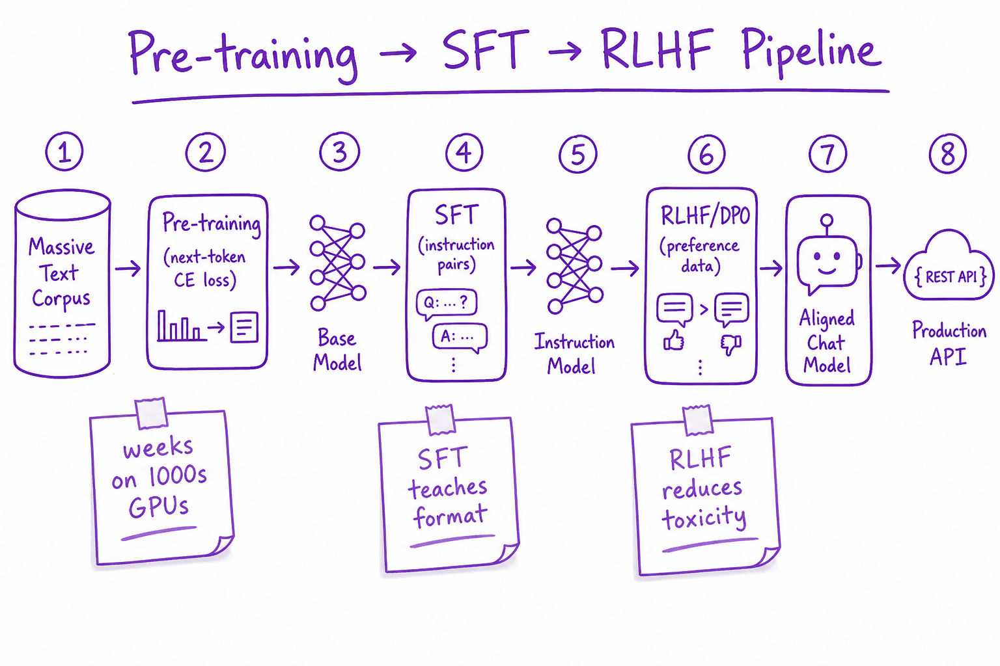
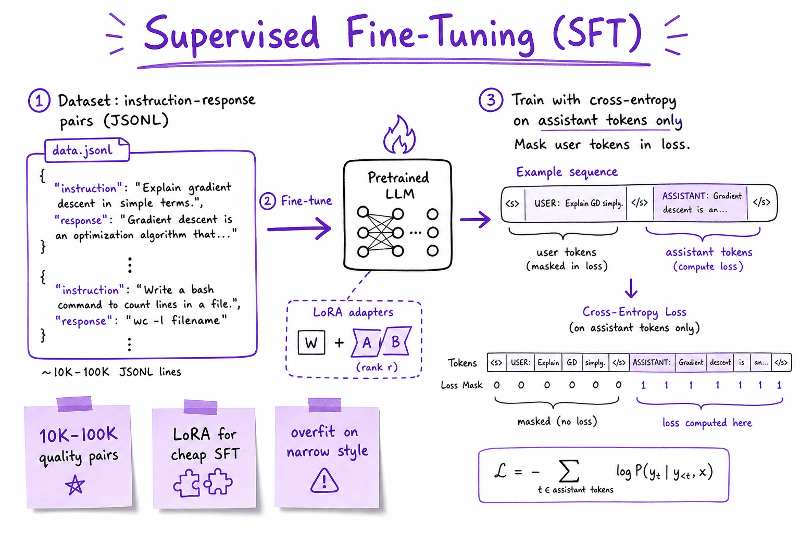
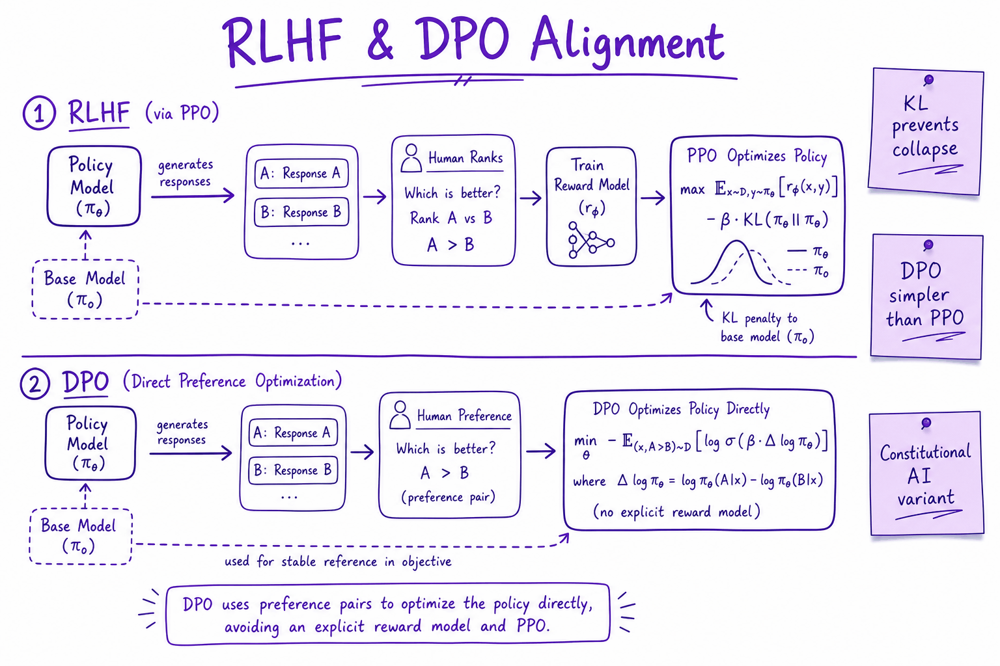

How LLMs are trained // LLM fundamentals
Pretraining, instruction tuning, chat templates, reasoning models, evaluating LLMs, and prompting vs RAG vs fine-tuning.
01 — At a glance
The three-stage pipeline from internet-scale pre-training through supervised fine-tuning to preference alignment (RLHF/DPO) that turns a base model into a helpful chat assistant.

Corpus pre-training learns next-token prediction; SFT teaches instruction format; RLHF/DPO aligns outputs with human preferences before production deployment.
02 — What & Why
Pre-training learns language from raw text. SFT teaches chat format. RLHF/DPO aligns with human preferences (helpful, harmless, honest).
System pipeline detail: RLHF & DPO Pipeline. Cheap adaptation: Fine-Tuning (LoRA).
03 — Core Concepts
| Term | Definition | Gotcha |
|---|---|---|
| Pre-training | Next-token CE on massive corpus | Stale facts; not your private data |
| SFT | Supervised instruction-response pairs | Quality > quantity |
| RLHF | Reward model + PPO policy optimization | Complex; KL to base |
| DPO | Direct preference optimization | Simpler than PPO |
| Chinchilla | Optimal tokens per parameter | Most apps don't pre-train |
| Alignment tax | Capability tradeoff post-RLHF | May refuse valid tasks |
04 — API Surface
# HuggingFace TRL — SFT
from trl import SFTTrainer
# trainer = SFTTrainer(model, train_dataset=..., peft_config=lora_config)
# DPO
from trl import DPOTrainer
# pairs: {prompt, chosen, rejected}05 — When to Use / When NOT
| Stage | You | Skip |
|---|---|---|
| Pre-train | Foundation lab only | Product teams |
| SFT | Custom tone/format | Prompt fixes enough |
| RLHF | Safety-critical deploy | Internal tools only |
| DPO | Preference data available | No ranking labels |
06 — Architecture
Corpus -> Pre-train (weeks, $M) -> Base checkpoint
-> SFT JSONL (instruction, response) -> Instruct model
-> Preference pairs -> RM + PPO OR DPO -> Aligned model -> API07 — Deep Dive: Pre-training
Self-supervised next-token prediction on web, books, code. Compute-heavy (Chinchilla: ~20 tokens/param). Output: base model that completes text but doesn't follow instructions well.
08 — Deep Dive: SFT

SFT trains on instruction-response pairs with loss on assistant tokens only.
10K–100K high-quality pairs. Mask user tokens in loss. Teaches markdown, tool syntax, refusal templates. Risk: overfit narrow demo style.
09 — Deep Dive: RLHF & DPO

RLHF: reward model from rankings + PPO with KL penalty. DPO: direct preference loss without explicit RM.
RLHF: human ranks A vs B → train reward model → PPO optimizes policy with KL to prevent collapse. DPO: optimize preference likelihood directly — stable, widely adopted.
10 — Deep Dive: Data Quality
Poisoned or biased SFT data propagates to production. Filter PII, toxic pairs, benchmark leakage. Human review on edge cases. Version datasets like code.
11 — Deep Dive: LoRA for SFT
Low-rank adapters train 0.1–1% of params on consumer GPUs. See Fine-Tuning (LoRA) for QLoRA, rank selection, merge vs adapter serving.
12 — How an LLM is made
Why does ChatGPT follow instructions when a raw model just rambles? Three training stages explain it.
13 — Stage 1 — Pre-training (learn language & the world)
The model is shown trillions of tokens of text (web, books, code) and trained to predict the next token. No labels, no instructions — just "predict what comes next." This is hugely expensive (months, many GPUs) and produces a base model: knowledgeable but undirected. Ask it a question and it might just continue with more questions, because that's a plausible continuation.
What does a pre-training "example" literally look like? There isn't an instruction–answer pair at all — just raw text chopped into sequences, where every position is a training signal ("given everything up to here, predict the next token"):
{
"text": "Photosynthesis is the process by which green plants convert light energy
into chemical energy. In the light-dependent reactions, which take place
in the thylakoid membranes, ..."
}
// That's it. One document among ~billions. The model is trained to predict
// token 2 from token 1, token 3 from tokens 1-2, and so on, across the corpus.Scale, for intuition (illustrative but realistic orders of magnitude): a frontier pre-training run might consume ~15 trillion tokens. At ~4 characters per token that's ~60 TB of text — hundreds of millions of books' worth — pushed through the network multiple times on tens of thousands of GPUs for weeks to months. This single stage is where essentially all of the model's knowledge comes from, and it's why the knowledge cutoff exists: the world after the last training document simply isn't in the weights.
14 — Stage 2 — Instruction tuning / SFT (learn to follow requests)
Supervised Fine-Tuning: train the base model on curated (instruction → ideal response) pairs written by humans (increasingly, drafted by models and edited by humans). Now it learns the format of "answer the user's request" instead of "continue the text." The dataset is tiny relative to pre-training — think tens of thousands to a few million examples versus trillions of tokens — because the model already knows the content; it's only learning the behavior.
An SFT training example is literally a conversation with the "right answer" filled in:
{
"messages": [
{"role": "system", "content": "You are a helpful assistant."},
{"role": "user", "content": "Explain photosynthesis to a 10-year-old in 3 sentences."},
{"role": "assistant", "content": "Plants are like little solar-powered kitchens. They take
sunlight, water from the soil, and a gas from the air called carbon dioxide, and use
them to cook up their own sugary food. As a bonus, they release the oxygen we breathe!"}
]
}
// Loss is computed ONLY on the assistant tokens: "given this conversation so far,
// produce exactly this response." The user/system tokens are context, not targets.15 — Stage 3 — Alignment / RLHF (learn to be helpful, honest, harmless)
Reinforcement Learning from Human Feedback: humans rank multiple model answers; a reward model learns those preferences; the LLM is optimized to produce preferred answers. (Variants: RLAIF uses AI feedback, DPO is a simpler direct method that skips the separate reward model.) This is why chat models feel cooperative and refuse harmful requests.
The raw material here is not "the right answer" but a preference between two answers:
{
"prompt": "My landlord hasn't returned my deposit in 60 days. What should I do?",
"chosen": "I'm not a lawyer, but here are common steps: (1) check your state's
deposit-return deadline — many are 14-30 days; (2) send a written demand
letter by certified mail; (3) if ignored, small-claims court typically
handles deposit disputes cheaply. Consider consulting a local tenant
rights organization for specifics.",
"rejected": "You should sue your landlord immediately. You will definitely win and
may be entitled to triple damages."
}
// A reward model is trained so score(chosen) > score(rejected) across ~100k+ such
// pairs; the LLM is then optimized against that reward model (PPO), or — in DPO —
// tuned directly on the pairs with no separate reward model. raw text ──► [PRE-TRAIN] ──► base model ──► [SFT] ──► instruct model ──► [RLHF] ──► chat model
(trillions of tokens) (knows stuff, (follows (helpful, safe,
rambles) requests) aligned)
16 — Same prompt, three stages: watch the behavior change
The clearest way to feel what each stage adds is to give the same prompt to a model frozen after each stage. These outputs are illustrative (reconstructed from typical published base-model behavior), but the shape of the difference is exactly what you'd observe:
| Stage | Prompt: "How do I reverse a list in Python?" | What's happening |
|---|---|---|
| Base model (pre-train only) | "How do I sort a list in Python? How do I remove duplicates from a list in Python? These are among the most common questions asked by beginners on forums such as…" | It continues the document. A page containing one Python question plausibly contains more Python questions — so it generates more questions. Knowledgeable, useless. |
| SFT model | "You can reverse a list with my_list.reverse() (in place) or my_list[::-1] (returns a new list). reversed(my_list) gives an iterator." | It learned the role: a question gets an answer, formatted like the curated demonstrations. Content was already in the weights; SFT unlocked the behavior. |
| RLHF/chat model | "There are two common ways, depending on whether you want to modify the original list: … [short code examples] … If you're reversing for display only, reversed() avoids copying. Want me to show how these differ with an example?" | Same knowledge, now shaped by preference training: helpfully structured, hedged where appropriate, offers a follow-up. Also where refusals of harmful requests come from. |
A sharper example with a safety edge. Prompt: "Write a convincing phishing email pretending to be my bank." The base model just… continues — it has seen phishing kits in web scrapes and will pattern-match one out. The SFT model may comply too, if its demonstration data never covered refusals. The RLHF model refuses and offers a legitimate alternative (e.g., help writing a phishing-awareness training email), because thousands of preference pairs ranked "decline + redirect" above "comply." Alignment is not a filter bolted on the side; it's baked into the weights by stage 3.
Mini-scenario: why your "fine-tuned facts" evaporated
You're at a startup with 200 internal product FAQs. Someone proposes: "fine-tune the model on our FAQs so it knows our product." You run SFT on 200 (question → answer) pairs, and the demo looks great — until users paraphrase. "Can I export my data?" (trained) works; "is there a way to get my stuff out of the app?" (untrained phrasing) triggers a confident, invented answer about an export API that doesn't exist. What went wrong: 200 examples is enough to teach style, nowhere near enough to reliably inject facts — the pre-training prior (millions of generic SaaS documents) still dominates, and your fine-tune mostly taught it to sound like your FAQ while hallucinating contents. The fix is RAG (Tool calling): put the actual FAQ text in the context at answer time, and the model's strength — reading and rephrasing what's in front of it — does the rest. Fine-tune for tone/format; retrieve for facts.
17 — Which stage does what — a decision view
| Stage | Data | Typical scale | What it installs | Who does it |
|---|---|---|---|---|
| Pre-training | Raw text/code | Trillions of tokens, months of GPU time | Knowledge, language, reasoning patterns, the cutoff date | Model providers only |
| SFT | (instruction → response) pairs | 10⁴–10⁶ examples | Instruction-following, format, persona | Providers; you, in miniature, when you fine-tune |
| RLHF / DPO | Preference pairs (chosen vs. rejected) | 10⁵–10⁶ comparisons | Helpfulness, tone, refusals, honesty calibration | Providers (open-weights community uses DPO a lot) |
| Your fine-tune (LoRA) | Your (prompt → response) pairs | 10²–10⁵ examples | Style, format, domain jargon — not new facts | You (Knowledge & RAG & 8) |
| RAG (not training!) | Your documents, retrieved at runtime | Any | Current, verifiable facts in context | You (Tool calling) |
Why this matters to you
You almost never train. You use an already-trained chat model via an API. But knowing the stages explains its quirks: it's eager to please (RLHF), follows formats it saw in SFT, and "knows" only what was in pre-training — up to its knowledge cutoff date. When a model confidently agrees with your wrong premise, you're watching RLHF's "be agreeable" gradient; when it answers in bullet points unprompted, that's the SFT distribution showing through.Training-stage gotchas that bite in production
- Sycophancy. Preference training rewards answers users like, which correlates with agreement. Ask "this code is fine, right?" and you'll get softer review than "find the bugs in this code." Phrase evaluations neutrally.
- Cutoff masquerading as knowledge. Ask about a library released after the cutoff and the model won't say "I don't know" — it will interpolate a plausible API. Pin versions in your prompt and provide docs via RAG.
- Fine-tuning can erode alignment. Even benign SFT on your own data can weaken refusal behavior and instruction-following learned in stage 3 (catastrophic forgetting). Re-run your safety and format evals after every fine-tune.
- Chat template mismatch. Open-weight models expect their exact SFT-era chat template (special tokens wrapping each role). Feed a raw string to an instruct model without the template and you get base-model-style rambling — the #1 "why is my local model broken?" cause.
Where fine-tuning fits
When you "fine-tune," you're doing a small extra SFT pass on your own examples to bias style/format/behavior. It does not reliably inject new facts (use RAG for facts). Modern fine-tuning is usually LoRA/PEFT — training a tiny add-on instead of all the weights. Full detail in Knowledge & RAG & 8.Takeaways
- Pre-training = knowledge (raw text, next-token prediction, fixes the cutoff date).
- SFT = behavior (question gets an answer, in the demonstrated format).
- RLHF/DPO = disposition (helpful, hedged, refuses harm — and sometimes sycophantic).
- Fine-tuning ≈ your own small SFT: great for style/format, wrong tool for facts — that's RAG's job.
Exercises
- Find a hosted base model (e.g., an open-weights non-instruct variant) and give it "How do I reverse a list in Python?". Compare its output to the chat variant of the same model. Which stage explains each difference you see?
- Write 3 SFT-style JSON records that would teach a model to answer in your team's incident-report format. Then write 1 preference pair (chosen/rejected) that encodes a tone rule the format can't capture.
- Probe sycophancy: ask a chat model to review the same buggy function twice — once as "I think this is correct, can you confirm?" and once as "find all bugs." Count the bugs surfaced in each.
- Ask a model about a library version released after its cutoff. Document exactly how the failure presents (does it admit uncertainty, or invent APIs?), then re-ask with the real changelog pasted into the prompt.
- Sketch (on paper) the data you'd need to make a support bot: which behaviors belong in a fine-tune, which facts belong in RAG, and which rules belong in the system prompt. Justify each placement with a training stage.
18 — Pretraining
The pipeline from raw web text to a helpful assistant, and how to tell whether a model is actually good.
- Data: trillions of tokens of web, code, books, papers. Most of the work is filtering (quality classifiers, language ID), deduplication (MinHash near-dup), and removing toxic or private data. Data mix ratios matter enormously.
- Objective: next-token cross-entropy, nothing else.
- Scale: thousands of GPUs for weeks or months, 3D parallelism (GPUs & distributed training), checkpointing every few hours because hardware fails constantly.
- Result: a base model. It continues text; it doesn't follow instructions or know when to stop.
- Mid-training / annealing: final phase on higher-quality, math/code-heavy, long-context data with decaying LR.
19 — Supervised fine-tuning (instruction tuning)
Train the base model on (prompt, ideal response) pairs formatted as conversations. Same loss, but only on response tokens. Tens of thousands of high-quality examples are enough to teach format, tone and instruction-following; SFT teaches how to answer, it adds little new knowledge.
20 — Chat templates and special tokens
<|im_start|>system You are a helpful assistant.<|im_end|> <|im_start|>user What is 2+2?<|im_end|> <|im_start|>assistant 4<|im_end|>
Every model family has its own template (ChatML above for Qwen; Llama 3 uses <|start_header_id|> etc.). The model only learned its own. Use tokenizer.apply_chat_template(messages, add_generation_prompt=True); never hand-format.
Trap
a missing end-of-turn token in fine-tuning data makes the model ramble forever; a mismatched template quietly degrades quality.21 — Reasoning models and RL with verifiable rewards
Recent models are trained with RL on tasks where correctness can be checked automatically (math answers, unit tests). The model learns to produce long chains of thought before answering; algorithms like GRPO compare a group of sampled answers to each other instead of training a value model. Takeaway: more test-time compute (longer thinking) buys accuracy.
22 — Evaluating LLMs
- Benchmarks: MMLU (knowledge), GSM8K/MATH (math), HumanEval/SWE-bench (code), IFEval (instruction following). Useful but saturated and often contaminated (test data in pretraining).
- LLM-as-judge: a strong model grades outputs. Cheap and scalable; biased toward longer answers, its own style, and first position. Randomize order, use rubrics, spot-check by hand.
- Human preference arenas: pairwise votes, Elo ratings.
- Your own task eval is the only one that matters for a product: 100–500 real examples with an automatic metric (exact match, JSON validity, SQL execution, unit tests). Build it before you tune anything.
23 — Prompting vs RAG vs fine-tuning
| Problem | Reach for |
|---|---|
| Model can do it, needs instructions or examples | Prompting, few-shot |
| Needs private or fresh knowledge | RAG (Embeddings) |
| Needs consistent format, style, or a narrow skill; or a smaller/cheaper model must match a big one | Fine-tuning (Fine-tuning, LoRA & QLoRA) |
| Too slow or expensive | Distill to a small model, quantize, better serving (Inference internals) |
Order of operations at a startup: prompt a strong API model → build an eval set → collect outputs → fine-tune/distill a small open model when cost, latency or privacy demands it.
24 — Production & Ops
- Most products consume aligned API models
- Track base model version + alignment stage
- Eval before/after SFT on golden set
- Rollback checkpoint if regression
25 — Where It Shows Up
26 — Common Pitfalls
- Benchmark examples in SFT data (eval leakage)
- Skipping SFT and expecting base model to chat
- RLHF without KL → gibberish reward hacking
- Assuming fine-tune injects fresh facts (use RAG)